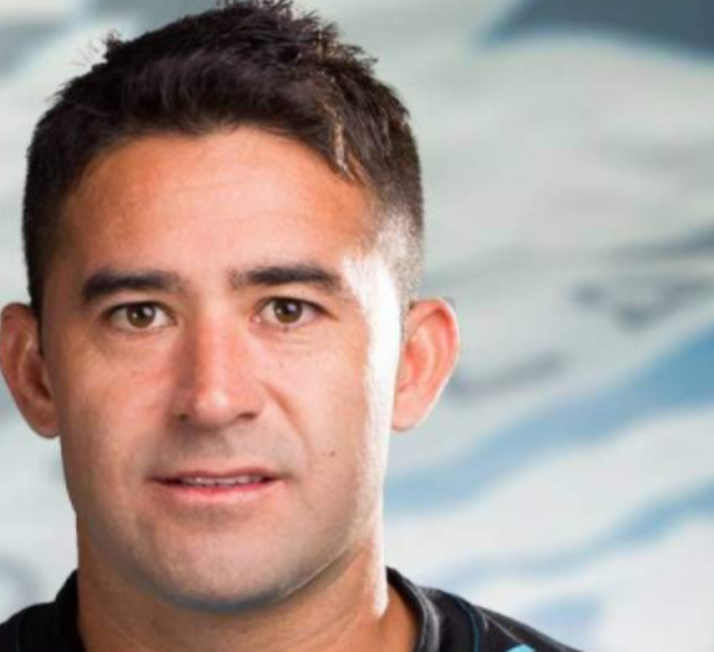

Ultimo Fichaje
En el partido de Independiente del Valle vs Fuerza Amarilla se produjo el estreno como titular del
argentino-ecuatoriano Claudio Bieler uno de los mas destacados y cuyo aporte se noto en la cancha

En el partido de Independiente del Valle vs Fuerza Amarilla se produjo el estreno como titular del
argentino-ecuatoriano Claudio Bieler uno de los mas destacados y cuyo aporte se noto en la cancha
Claudio Bieler cumplia casi con todos los requisitos. La dirigencia de Independiente del Valle buscaba un jugador de jerarquia
y mediatico para la temporada 2019. El delantero de 35 años estuvo en la mirada del club desde hace mas de seis meses.
Claudio, el "Taca" Bieler fue presentado en el Independente del valle la mañana de este lunes 25 de marzo del 2019.
El delantero argentino, nacionalizado ecuatoriano se sumara al plantel dirigido por el español Ismael Rescalvo para disputar del campeonato nacionalizadoy el partido de vuelta de la primera ronada de la Copa Sudamericana.

Fichajes Anteriores